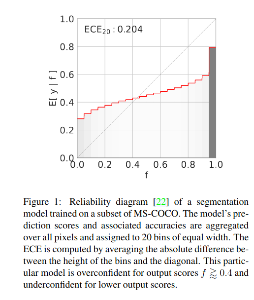
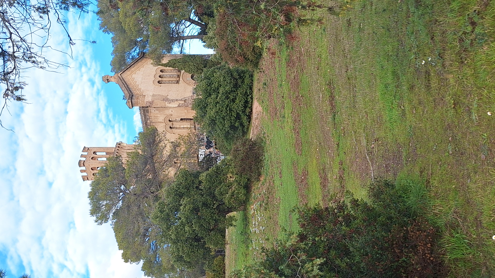

Winter school where i learned about Conformal prediction (CP) and Transfert Learning. ECAS : European course in advanced statistics.
Motivation
My Phd relates to Active Learning, where we label images that would minimize the generalization error of an estimator on a dataset. To achieve this goal, two categories of strategies exists, we could focus on the estimator weaknesses where its estimated error is maximal. Or we could use a feature-based approach where we provide the network with as different items as possible.
Strategies based on weaknesses like entropy selection relies on two hypotheses :
- The images for which the model is the least certain are the most informative ones
- the prediction vector is a good estimator of the model uncertainty.
The problem is that the second hypothesis is wrong, indeed, as we can see in this image taken from (Brunekreef et al. 2023).

That is why one of my tasks is to quantify the uncertainty of the neural networks with better statistical guarantees, notably by using Conformal prediction. That part was address by the marvelous Margaux Zaffran. She took her time and her talk was very clear and well structured. I can’t thank her enough for her time and hope i will be able to use CP in my work to improve labeling efficiency.
The second problem is that in industry, the data in production is often different with the data in the database. Indeed, multiple shift can happen (covazriate and label shift mostly). We had the chance to have Antoine De Mathelin and Mounir Atiq to talk about domain adaptation and all the possible methods to try to get the best of our models even where the production data isnot the same as the training data.
And last but not least, we had Mathilde Mougeot talking about Physics informed neural networks (PINNS). It was the first time i have been exposed to this tool, i have to say i loved to see physics equations directly linked with the gradient descent to model mechanical contraints on tyre materials.
Conformal Prediction
This is the field i want to become good at. Indeed, my PA fell in love with this field and im afraid i did too during this week. I met so nice people working on it and making the best use of this theoretical tool in the industry i want to make our computer vision more reliable as well.
All the course and the slides are in this github repo. The slides are clear and all the proofs are written as well.
Complete book with theoretical proofs and explanations : (A. N. Angelopoulos, Barber, and Bates 2025).
Short Summary:
Linear regression with gaussian hypothesis allow a good uncertainty quantification (UQ) using gaussian hypotheses for parameters and target variable. Some situation where models are bigger and does not follow any assumptions over parameter values makes UQ impossible using any assumption on model or errors. That is the problem CP is solving, given one only hypotheses (exchangeability of non conformity scores) it allows a good UQ which is distribution free (no assumpotion over the data distribution) and model agnostic (independent on the estimator). This is very good because in deep learning we litteraly have no tool to quantify uncertainty with statistical guarantees.
Given a labeled dataset of size n \((X_i,Y_i)^n_{i=1}\), we want to be able to predict a new point \(X_{n+1}\) with confidence.
Meaning that for any user defined risk \(\alpha \in [0,1]\), \(\mathcal{P}\{Y_{n+1} \in \mathcal{C}_{\alpha}(X_{n+1})\} \geq 1 - \alpha\). \(\mathcal{C}_{\alpha}\) should be as small as possible to be informative. Indeed the case where \(\mathcal{C}_{\alpha} = \mathcal{Y}\) verifies the \(1-\alpha\) coverage but provides no information about the predictive uncertainty.
\((Z_i)^n_{i=1}\) a random vector taking values in \(\mathcal{Z}^n\) is exchangeable if, for any permutation \(\sigma\) of \([0,1]\) :
\[(Z_1, ..., Z_n) \stackrel{d}{=} (Z_{\sigma(1)}, ..., Z_{\sigma(n)})\]
how does it work ? (Split conformal Prediction setting)
In machine vision, our models are so big we can’t afford doing LOO Cross validation or cross validation with Full Conformal Paradigm. We will focus on the Split Case.
- Split your date into Train, Calibration and Test splits
- Train A to get \(\hat{\mu}\) on Train
- Compute \(\hat{\mu}\) on Cal
- Obtain a set of non conformity scores
\[S = \{S_i = |\hat{\mu}(X_i) - Y_i|, i \in Cal \} \cup \{+\infty \}\]
- Compute the \(1 - \alpha\) quantile of these scores, noted \(q_{1-\alpha}(S)\)
- For a new point \(X_{n+1}\), return :
\[\hat{C}_{\alpha}(X_{n+1}) = [\hat{\mu}(X_{n+1})- q_{1-\alpha}(S), \hat{\mu}(X_{n+1})+ q_{1-\alpha}(S)]\]
The guarantee of those predictor are the following :
\(\mathbb{P}\{ Y_{n+1} \in \mathcal{C}_{\alpha}(X_{n+1}) \} = 1 - \alpha\) This is the marginal guarantee, meaning that for all our predictions, at least \((1-\alpha)\%\) of the test points will be covered. But there might be some sub categories that are not covered at all.
In active learning we want to estimate the uncertainty of the model for one specific data point. What we would like to have is conditional converage, being :
\(\mathbb{P}\{ Y_{n+1} \in \mathcal{C}_{\alpha}(X_{n+1})| X_{n+1} \} = 1 - \alpha\).
This is adaptative methods. Some paper made adaptative method for classification with very strong guarantees. (see section discussion with litterature recommendations recarding this matter).

Transfer Learning
This field sounds specific but actually any statistician working with real world data will faced generalization problem one day or another.
All the material is in this github repo
Discussions
For classification (Romano, Sesia, and Candès 2020) provide very strong guarantee with adaptivity. That is what we need in active learning. RAPS Extensions with (A. Angelopoulos et al. 2022) improve this with smaller prediction sets. This gives hope in the use of CP in AL. When some defects are very rare conformal prediction garanteeing only marginal coverage some classes might not be covered (no conditional coverage in general cases), she recommanded me the work of Tiffany Ding (Ding, Fermanian, and Salmon 2025) in collaboration with Plantnet.
She suggest Y-conditional conformal algorithms to guarantee that the coverage is verified for any classes with this paper (Ding et al. 2023).
This is still an area at the research stage but some solution exists to tackle our problems. We shall not forget that most of people using big neural network do not quantify the uncertainty at all. So it is nice to do the first step.
Antoine was so nice to give his insight about his past with active learning and domain transfert i really want to thank him again. He agree that active learning doesn’t beat random in most cases, but he believes more in AL than in domain adaptation…. Let’s do our best !
It is normal for Al to bias the distribution, because if we didn’t want to bias it we would have stayed with random sampling.
He prefers k-medoids over core-set selection. It must be similar to typiclust so i will work on that and see how i can make my best of it.
He liked the idea of the potato project and was surprised that the AL could work that well in some cases. (Might be a bug ? i hope not…). He is not surprised that transfert in strategy independent. Indeed, when there is a distribution shift it is likely that nothing will help you in most real data cases. He notes that even for \(\pi^u=10%\) AL can generalize well and beat random.
Thanks


This week has been the most intense of the Phd so far. All the day was filled up with either insane classes or deep conversations. I want to particularly thank
Margaux, Louis, Guillaume1, Guillaume11, Francois, Matthias and Paul.
Thank you for all the good time guys. I hope i will be able to become like you one day.